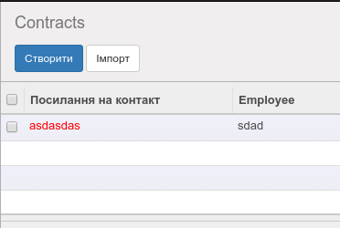

<section class="oe_container">
    <div class="oe_row oe_spaced">
        <div class="oe_span12">
            <h2 class="oe_slogan">Simple way to create Colored Fields</h2>
        </div>
        <div class="oe_span6">
            <div class="oe_demo oe_picture oe_screenshot">
                    
            </div>
        </div>

        <div class="oe_span6">
            <p class='oe_mt32'>
                Simple module, that allow you to create customizable colored fields:
                - Colored field for text in list view
                - Colored field for boolean value in list view
            </p>
        </div>
    </div>
</section>

